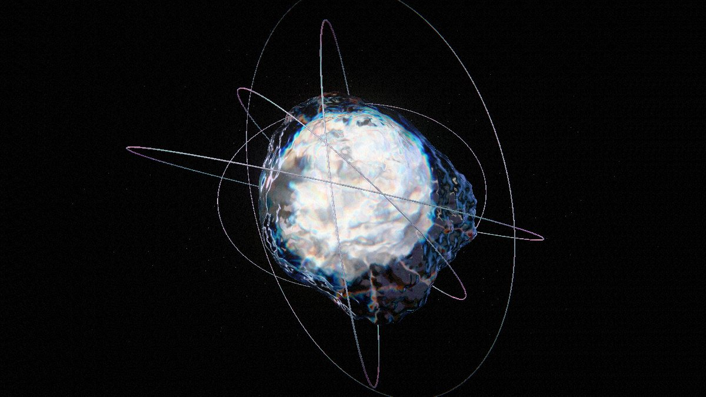

A dispersive glass body around a sedimentary core, crossed by iridescent filament orbits. It began as an
exported model that only looked right in the frame it was rendered in. This study rebuilds it as a live
three.js scene: nothing is downloaded at runtime, the geometry is grown from seeded noise, and the
spectrum comes out of real refraction rather than a post-processing trick.

Type
Concept · self-directed
Discipline
Real-time 3D · WebGL
Built with
three.js r185, vendored
Payload
No models, no textures
The brief
The reference was a still: a mineral body seen through thick glass, its edges broken into spectra,
thin orbits passing in front and behind. A first pass produced the shape as an exported model, and
the shape was the easy half — dropped into a page it read as a grey lump. Everything that made the
plate convincing lived in the lighting and the refraction, and none of that survives an export.
So the goal was not to reproduce the picture but to rebuild the conditions that make it: something
that holds up while it turns, on a viewport of any shape, without shipping a single asset.
Design decisions
Dispersion, not a rainbow filter
The core is an opaque mesh, so it lands in three's transmission backdrop; the shell then
refracts it per wavelength. The spectral fringe is the refraction — it moves correctly as
the body turns, which a screen-space effect never does.
The environment is the lighting
A procedural dark room — a few broad panels and three narrow bright strips — is pre-filtered
into an environment map. The strips are what smear into spectra. Without them, glass has
nothing to bend and the whole plate goes flat.
The wings are the body
Separate membrane meshes were tried first and read as grey plastic against the dark ground.
Instead the shell's displacement field grows a handful of lobes, so one continuous
refracting surface carries the spectrum out to the silhouette.
How it is built
Two displaced icospheres do most of the work. A field function pushes each vertex along its own
direction — soft noise lumps and cosine lobes for the glass, ridged noise for the core's plates —
and normals are taken analytically from two tangent probes of that same field, so the surface stays
smooth without a welding or faceting pass. The core's stone colour, its dark blotches and the dust
around it all come from the same seeded generator, which means a seed number is a specimen: type the
same one and you get the same rock twice.
The orbits are opaque iridescent filaments on purpose — being opaque, they enter the transmission
backdrop, so the arcs passing behind the body get refracted along with everything else. A short post
chain finishes it: bloom on the spectral highlights, then vignette, lens chroma and film grain
applied after tone mapping to seat the render in the page's black.
The Parameters panel on the live concept drives the same handles the source file
exposes — dispersion, roughness, IOR, exposure, bloom, grain — so the look can be settled by eye and
the values written back into the defaults.
Craft notes
three.js is vendored under /assets/vendor/three; the showcase loads no third-party
scripts and stays a plain static page like the rest of the library.
Small screens and coarse pointers get a lighter tier — less shell subdivision, half-size
transmission target, capped pixel ratio — because the transmission pass is paid for twice.
Portrait viewports pull the camera back only as far as the framing needs, so the specimen never
shrinks to a bead on a phone.
The render loop parks while the tab is hidden, and
prefers-reduced-motion freezes the tumble, the orbits and the grain.
Outcome
A showcase that is generated rather than shipped: about 40 KB of hand-written code over a
vendored renderer, no model files, no textures, no CDN. It survives being turned, resized and
re-seeded, and the same module drops into any page — hand it a container, it fills it, and
dispose() gives the GPU back.